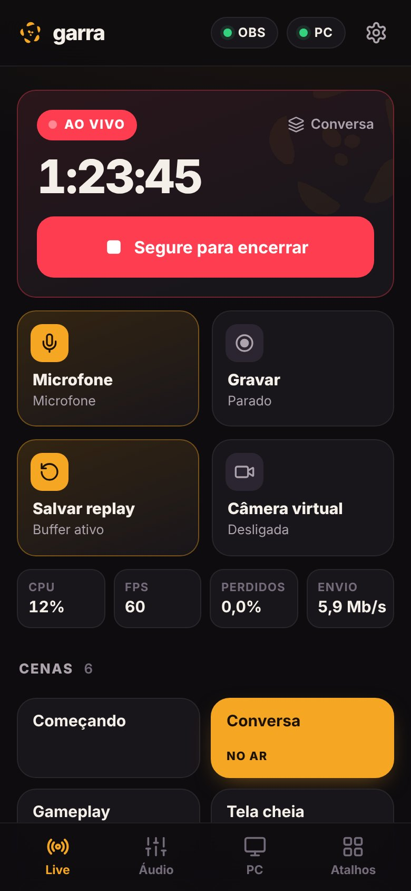
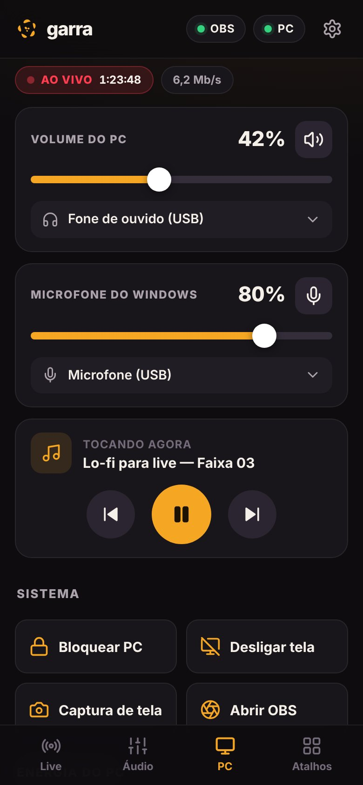
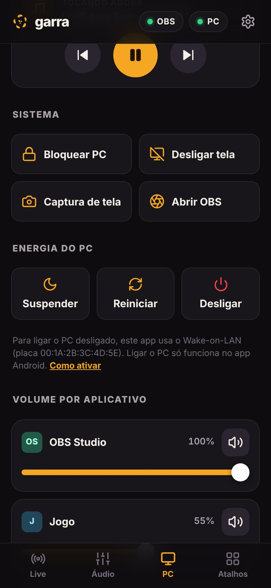

Seu PC e o OBS na palma da mão.
O Garra transforma o telemóvel num controle de live: troca de cena, entra no ar, ajusta o áudio de cada app do Windows, abre seus jogos e até liga e desliga o PC. Tudo pelo Wi-Fi, sem fios e sem mensalidades.
Licença vitalícia por apenas 5,00 € · Teste gratuito disponível · Windows 10 e 11 · Android

Quatro abas. Tudo da live.
Live
Entre e saia do ar com um toque segurado, para não encerrar a live sem querer. Grave, pause, salve o replay e ligue a câmera virtual.
- Cenas em botões grandes, com Modo Estúdio e transição
- Mostrar e esconder fontes da cena
- CPU, FPS, quadros perdidos e taxa de envio na hora
Áudio do OBS
O mixer do OBS inteiro no celular, com medidores ao vivo: volume, mudo e o nível de cada fonte enquanto você fala.
- Microfone, música, chat de voz e alertas separados
- Mudo com um toque, sem sair do jogo
PC
O que o Windows não deixa fazer rápido: volume de cada aplicativo, trocar fone e microfone, controlar a música e cuidar da energia do PC.
- Volume e mudo do jogo, do Discord, do Spotify, cada um no seu
- Bloquear o PC, apagar a tela, tirar captura de tela
- Suspender, reiniciar e desligar, com 30 segundos para cancelar
- Ligar o PC desligado pelo celular (Wake-on-LAN, no cabo de rede)
Atalhos
Seus jogos da Steam e da Epic aparecem sozinhos, com a capa. Adicione qualquer outro programa no Garra Hub e abra tudo pelo celular.
- Busca, favoritos e filtro por loja
- Funciona sem o OBS: quem só quer o controle do Windows esconde as abas da live
Um app no PC, outro no celular.
O Garra Hub é um programa pequeno para Windows. Ele fica na bandeja, perto do relógio, e faz a ponte: lê a configuração do OBS sozinho, então ninguém digita senha, e mexe no áudio e no sistema quando o celular pede.
Os dois conversam só dentro da sua rede Wi-Fi. Não há servidor do Garra na internet, conta, anúncio ou coleta de dados.


Instalar leva dois minutos.
-
Baixe e abra o Garra Hub no PC
Extraia o Garra_Hub.zip numa pasta (por exemplo, Documentos) e dê dois cliques em Garra Hub.exe. Não precisa instalar nada.
Baixar o Garra Hub -
Passe pelo aviso do Windows
Como o Garra é novo e ainda não tem assinatura digital paga, o Windows mostra um aviso azul na primeira vez. Clique em Mais informações e depois em Executar assim mesmo. Se o Firewall perguntar, marque Redes privadas e clique em Permitir.
O Windows protegeu o computador O Microsoft Defender SmartScreen impediu a inicialização de um aplicativo não reconhecido. Mais informaçõesAplicativo: Garra Hub.exe Executar assim mesmoNão executarIlustração. A janela real pode variar com a versão do Windows.
-
Instale o app e pareie
No Android, baixe o app e permita instalar desta fonte. Abra o Garra, toque em Começar › Procurar meu PC e digite o código de 6 números que aparece no Garra Hub. Celular e PC precisam estar no mesmo Wi-Fi.
Baixar o app AndroidNo iPhone: no Garra Hub, clique em QR code para iPhone, abra no Safari e use Compartilhar › Adicionar à Tela de Início.
Garra Pro
Controle ilimitado e recursos avançados para suas transmissões e para o seu PC. Sem mensalidades ou assinaturas: compre uma vez e use para sempre.
🔒 Pagamento 100% seguro via Stripe · Cartão de Crédito, Apple Pay, Google Pay e Multibanco
Perguntas
Preciso do OBS para usar o Garra?
Não. Sem o OBS, o Garra vira um controle do Windows: volume de cada app, fone e microfone, música, energia do PC e seus jogos. As abas Live e Áudio somem e voltam quando você conectar o OBS.
Qual versão do OBS funciona?
OBS Studio 28 ou mais novo, com o servidor WebSocket ligado: no OBS, Ferramentas › Configurações do servidor WebSocket › Ativar. O Garra Hub passa o endereço e a senha para o celular sozinho.
Funciona fora de casa, no 4G?
Não. O Garra só conversa com o PC pela sua rede local, de propósito: assim ninguém de fora consegue controlar o seu computador.
O celular não acha o PC. O que faço?
Confira se o Garra Hub está aberto e se os dois estão no mesmo Wi-Fi. Na janela do Hub, clique em Liberar no Firewall. Se ainda assim não achar, digite no app o IP que aparece no Hub.
Como ligar o PC pelo celular?
Usa o Wake-on-LAN: o PC precisa estar no cabo de rede, com "Wake on LAN" ligado na BIOS e "Wake on Magic Packet" ligado na placa de rede do Windows. O passo a passo completo está no app, na aba PC, em "Como ativar".
É seguro? E os meus dados?
O Hub só aceita aparelhos pareados com o código de 6 números da tela dele. Nada sai da sua rede e o Garra não coleta dados. Leia a política de privacidade.
Quanto custa?
O Garra Pro é um aplicativo pago com licença vitalícia por apenas 5,00 € (pagamento único, sem assinaturas ou mensalidades). Você tem acesso permanente a todas as funções e atualizações futuras. Uma versão de testes gratuita está disponível para você descarregar e experimentar a conexão com o seu PC antes de comprar.